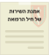
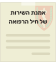

ברוכים הבאים ל-

אחמי הוא אחראי מרפאה די מפוזר... בבקשה היכנסו איתו לכל החדרים לפי הסדר ועזרו לו לארגן אותם!

אודות
רמ"ד טי"ל- רס"ן מיגל לויתן
רת"ח מו"פ וחדשנות בלמידה- סמ"ר במיל' גל גנסין וסמ"ר אופק בצון
עיצוב גרפי- סמל מייה ליבנה
תכנות- סמל טל סרוסי ורב"ט ניצן סלמון
מומחה תוכן- רס"ב יוסף פורטל
גרסה- אפריל 2022
תחזוקת החדר
חדר ההמתנה יהיה מוגן מפני פגעי מזג האוויר.
בחדר ההמתנה יימצאו הוראות, הנחיות, ומידע הסברתי למטופל, בהתאם להוראות קרפר.
בחדר יהיו ספסלי המתנה עם משענת בהתאם לתקן היחידה.
בחדר יפוזרו פחי אשפה לצורך שמירה על סביבה נקייה.
שילוט החדר
מחוץ לכניסה למרפאה ייתלו שלטים במקום בולט- לא על הדלת. השלטים שייתלו הם:
שעות פעילות המרפאה.
נוהל קבלת חולים למרפאה.
דרכי תקשורת השגת צוות הרפואי לאחר שעות הפעילות ובמקרה חירום.
המענה הרפואי לחיילי צה"ל לאחר שעות הפעילות (נוהל ביקור רופא).
במרכז החדר ייתלו:
שלט של שמירה על השקט והניקיון, ואיסור על עישון.
אמנת השירות של חיל הרפואה.

התבלבלתי ותליתי את כל השלטים מחוץ למרפאה!
לחצו על השלטים שאמורים להיות בפנים
לחצו על השלטים שאמורים להיות בפנים


 

מידע למטופל
בחדר ההמתנה יימצא מידע למטופלים, בחלוקה לפי נושאים:
הנחיות רפואה כלליות:
שעות פעילות המרפאה והמענה הרפואי לאחריהן ובעת חופשה.
נוהל קבלה לטיפול של בעל תפקיד (סגל/חניכים) לכל מתחם טיפולי.
נוהל פנייה למיון/מרפאת ביקור רופא ואופן בקשת טופס 119 (הוראת קרפ"ר 281.119).
רשימת מרפאות שיניים לעזרה ראשונה (אתר צה"ל ואפליקציית מקול הלב).
נוהל פנייה לוועדה רפואית (הוראת קרפ"ר 701.005).
זכויות וחובות החייל בכל הקשור בהפניות למומחים (הוראת קרפ"ר 300.007).
נוהל פנייה ישירה של אנשי הקבע למרפאות מומחים (הוראת קרפ"ר 300.007).
נוהל מערך הרפואה הראשונה למשרתי הקבע, הכוללות את רשימת מרפאות הקבע בצבא ואפשרות אנשי הקבע למעבר ביניהן (הוראת קרפ"ר 300.002).
דרכי התקשרות עם מרכז המידע וזימון תורים (אתר צה"ל ואפליקציית מקול הלב).
מידע למטופל
רפואת מומחים:
נוהל פניית/הפניית חייל בחובה/בקבע לקב"ן.
רשימת מרפאות מומחים צבאיות ואזרחיות, ורשימת אופטיקאים (כולל דרכי השגתן).
מומחי פיזיותרפיה ודרכי השגתם (אתר צה"ל, אפליקציית מקול הלב ואתר משר"פ דך הצה"לנט).
רפואת נשים:
נוהל בדיקת חיילת, הכולל רשימת רופאות נשים צבאיות ואזרחיות, ונוהל פנייה למרכז מהו"ת (ראש מערך רפואת נשים במרפ"א 8282).
מידע למטופל
לוח מודעות עם הנחיות רפואה מונעת ובריאות הצבא. אין לתלות הוראות קרפ"ר על הלוח- הנהלים שיימצאו הינם נהלים פנים יחידתיים המותאמים להוראות קרפ"ר ולהבנחיות הענפים השונים בחיל הרפואה. הלוח יעסוק בנושאים הבאים:
מניעת עישון.
נזקי שמש.
תזונה נכונה בשגרה ולפי עונות השנה.
פעילות גופנית ואורח חיים בריא.
מודעות לאבחון סרטן השד ונקודות חן.
מידע בנושא אמצעי מניעה, ופרסום מרפאות לבדיקת HIV


בבקשה עזרו לי לגרור את המודעה ללוח הנכון
חדר קבלה
קבלת מטופלים למרפאה תתבצע בהתאם לנוהל העבודה שנכתב על ידי מפקד המרפאה. נוהל העבודה יהיה תואם לפק"ל שגרת המחנה ביחידה.
בחדר יימצאו מחשב, טלפון וציוד משקי לוגיסטי.
הצוות הרפואי יכיר את מערכת זימון התורים וידע לקבוע תורים עבור חיילי היחידה למרפאות המומחים (רלוונטי למרפאות המנהלות זימון תורים).
בחדר הקבלה תבוצע הקפדה יתרה על שמירת סודיות רפואית- בין אם בשיח עם המטופל או בין אם בנעילה והצנעה של מסמכים רפואיים (כמתחייב בחוק "זכויות החולה"- סודיות רפואית).
אוגדן חדר הקבלה
במרפאות בהן יש חדר קבלה צריך להכין אוגדן הנחיות שיכיל את הנושאים הבאים:
נהלי עבודה על פי פק"ל המרפאה.
רשימת תכולה של הציוד הנמצא בחדר הקבלה.
הוראות ב"מ (ביטחון מידע) בשימוש במחשבי צה"ל.
נוהל כתוב על יחסי גומלין בין היחידה למרפאה בקביעת התור.
עזרו לי ליצור אוגדן לחדר קבלה! גררו את הדפים הנחוצים לאוגדן ואת השאר לפח

הרגלי עבודה
בחדר זה מתקיים המפגש הראשון בין המטופל למטפל.
בחדר זה יעשו טיפולים על ידי איש צוות רפואה בלבד- ביוזמתו או על פי הוראות קר"פ, בהתאם להוראות קרפ"ר 200.001- סמכויות החובש.
על כלל אנשי הצוות המטפל ללבוש חלוק לבן ומגוהץ עם תג זיהוי המציין את שמו, תמונתו ותפקידו (הוראת קר"פר 300.001).
כאשר חדר הטיפולים משותף למרפאת החובה והקבע יש לקבוע שעות קבלה נפרדות (הוראת קרפ"ר 300.002).
לעיתים קיימות כמה עמדות טיפול בחדר אחד, ולכן יש לוודא שנשמרת הפרטיות של כל מטופל (הוראת קרפ"ר 300.001), ואף לבצע הפרדה פיזית בין מתחמי הטיפול באמצעות קיר הפרדה או וילון.
במידה שבחדר ישנו מתחם נטילת דגימות מעבדה, אין לשלב את פעילות המתחם בו זמנית עם קבלת מטופלים בחדר הטיפולים, על מנת לשמור על פרטיות המטופל.
גדי חייל בסדיר, תור (למקרה לא דחוף) הוא רוצה להסדיר.
גררו את הסמן כדי לבחור את הזמן, והקישו על ENTER כדי שהתור יוזמן.
גררו את הסמן כדי לבחור את הזמן, והקישו על ENTER כדי שהתור יוזמן.
שיבוץ שעה לתור של גדי:
תחזוקת החדר
על המתחם להיות בעל אמצעים תקינים למיזוג/חימום.
בחדר יהיו 4 פחים שונים:
פח לפסולת רפואית ביולוגית (הוראת קרפ"ר 603.007.4).
פח ייעודי לפסולת רפואית חדה (פח מחטים).
פח לפסולת רגילה (שאינה רפואית).
פח גריסה.
בצמוד לכל מכשיר רפואי הנמצא בחדר הטיפולים ימצאו הוראות הפעלה.
צוות המטפלים יכיר את המכשור ואת הוראות ההפעלה של כל מכשיר (הוראות קרפ"ר 901.029).
בחדר יימצא אוגדן חדר טיפולים.
שלטו באמצעות החצים במקלדת
לאיזה פח הפסולת אמורה לרדת
לאיזה פח הפסולת אמורה לרדת

אוגדן חדר טיפולים
אוגדן הוא קלסר שמכיל קובץ הוראות עבור הצוות הרפואי המטפל. עובדי המרפאה יכירו את ההוראות המתוייקות באוגדן, ואחראי המרפאה יחתים את העובדים על הצהרה על קריאת האוגדן אחת לחצי שנה. האוגדן יכלול את הנושאים הבאים:
הוראות כלליות לאופן העבודה בהתאם לקביעת מנהל המרפאה:
פתיחת יום וסגירתו.
שעות הפעילות.
אופן התנהלות העובדים בחדר (כולל הופעה ולבוש).
הוראות לעובדים ותורנים בחדר מעבר לשעות הפעילות.
הנחיות לרישום ודיווח רפואי.
הנחיות לעבודה עם המערכת הרפואית הממוחשבת לחובש/אחות/פרמדיק/פיזיותרפיסט/סייעת/רופא שיניים (בהתאמה למתחם הרפואי).
הוראות קרפ"ר רלוונטיות (לדוגמה: סמכויות החובש, פסולת ביולוגית וכו').
נוהל מהילת תמיסת סביעור.
נוהל חשיפה לדם (הוראת ענף רפואה 01-02-05).
רשימות חשובות
את המשימות של תורן במרפאה יש לרכז בדף תורנות.
בחדר תימצא רשימת תכולה- בחלוקה לציוד משקי, משקי רפואי ומחשוב.
בחדר הטיפולים יימצאו דפי רישום הזנה בדיעבד מפגש חובש (רטרו) למקרה בו המערכת קרסה.
שילוט בחדר
בכניסה לחדר ייתלה שלט המורה על אפשרות לליווי המטופל/ת בעת הפגישה עם המטפל (הוראת קרפ"ר 300.001).
שלט המצביע על מיקום אפוד הכוננות בחדר.
בחזית שולחן הטיפולים ייתלה שלט המפרט את מורשי הגישה לשולחן:
"הגישה לשולחן הטיפולים מותרת לרופא, חובש/ת, פרמדיק, אח".
"הגישה לשולחן הטיפולים מותרת לרופא, חובש/ת, פרמדיק, אח".
בבקשה עזרו לי לגרור את השלט למקום הנכון
אפוד כוננות
ביחידות המחזיקות כוננות לסיוע רפואי בשגרה, ניתן לקבוע אפוד/ווסט מחלקתי שישמש את כונן הרפואה בשגרה. ניתן גם לאפשר לכל כונן להחזיק בכוננות זו באמצעות ציודו הייעודי האישי.
בתוך האפוד/ווסט יש לוודא הימצאות רשימת תכולה המעודכנת לתקן ולמצאי הנלקחת ממערכת ה-sap (דו"ח תכולת ערכה קוד ZPKR).
יש לבצע מעקב אחר כשירות ותוקף הצר"פ והציוד הנוסף באפוד/ווסט לפי הנחיית הו"ק 200.008. בדיקת הכשירות תבוצע בכל כניסה למשמרת על ידי הכונן. מעקב אחר תקפות הציוד וכשירותו הטכנית יבוצע במעקבים הפנימיים של למשך 3 חודשים. ניתן לרשום את תוקף הפריטים על גבי רשימת התכולה של הערכה.
אחזקת דפיברילטור
יש לבצע בדיקה יומית של דפיברילטורים חצי אוטומטיים מסוגים phillips ו-AED, ולתעד זאת על גבי טבלת מעקב שתוחזק בצמוד למכשיר.
במסגרת הבדיקה יש לוודא כי נורית החיווי מהבהבת בירוק, על ידי התבוננות בלבד.
לחצו על נורית החיווי כדי להפעיל אותה!

עמדת נטילת דגימות מעבדה
בעמדה זו יימצאו:
צר"פ וציוד משקי בהתאם לתקני היחידה המופיעים באט"ל 2000 טבלאות 9 ו-10.
"אוגדן נהלי עבודה לנטילת דגימות מעבדה" עליו חתום כל הצוות הרפואי, ובו יכללו הנושאים הבאים:"
שעות הפעילות.
נהלי העבודה (הכוללים את אופן איסוף הדגימות, ריכוזן ושליחתן למעבדה המרכזית).
ממשקי העבודה וסדר הפעולות מול המעבדה המרכזית, הכוללים את נהלי מסירת הדגימות וקבלת התשובות, ואת אנשי הקשר במעבדה.
נוהל הטיפול בחשיפה לדם על פי הנחיית ענף הרפואה 05-02-01.
טבלה המרכזת את סוגי המבחנות הנדרשות לכל סוג של בדיקה.
סדר הפעולות הנדרש לאחר קבלת תשובת מעבדה חריגה, על פי הנחיית ענף הרפואה 08-01-01.
עזרו לי ליצור אוגדן לעמדת המעבדה! גררו את הדפים הנחוצים לאוגדן ואת השאר לפח
עגלת הטיפולים
הנחיות לשולחן טיפולים
שולחן הטיפולים יימצא נקי ומסודר במהלך יום העבודה- סידור שולחן הטיפולים יהיה בהתאם לסכימה. צר"פ יאורגן בהתאם להוראת ענף צר"פ "פינת אחסון וניפוק תרופות" מספר 02-04-0010.
משולחן הטיפולים ינופקו תרופות בסמכות חובש בלבד על פי הוראת קרפ"ר 200.001- סמכויות החובש.
תרופות הנמצאות בשולחן הטיפולים יהיו באריזתן המקורית, ואין לגזור תרופות מראש. כאשר מנופקת תרופה לחייל, החלק עם מספר האצווה ותאריך פגות התוקף נשאר בשולחן הטיפולים.
בשולחן הטיפולים יימצאו תרופות בהתאם למנה קבועה שנקבעה במרפאה לפי אופי צריכה וכמות המטופלים היומית/שבועית.
ביחידות בהן אין שימוש במדחום דיגיטלי עם כיסוי פלסטיק חד פעמי (פרובים), יוחזקו מדי החום בפעמוניות, כאשר בתחתית הפעמונית יונחו פדי גאזה. אחת ליום ימולאו הפעמוניות בתמיסת סביעור ביחס 1:100.
בשולחן הטיפולים לא ימצאו חומרי רפואה מונעת כגון: טבליות כלור, אלתוש, תמיסות לבדיקת מים.
כל הטיפולים אשר יוצאו משולחן הטיפולים ירשמו במערכת ה-cpr פרט למקרים בהם יש נתק בתקשורת, ואז הם יתועדו על גבי טפסי הזנה רטרו.
שילוט בשולחן טיפולים
מדי החום P.O ו-P.R יופרדו וישולטו בנייר דבק שקוף (לא בליקופלסט).
בשלטים של תרופות הנמצאות בשולחן הטיפולים ייכתב שם התרופה בשפה האנגלית- שם גנרי ושם מסחרי בהתאם להנחיות ענף צר"פ 02-04-0110.
מגירות השולחן ישולטו בהתאם לתכולה הנמצאת בהן.
תרופות שקיבלו הארכת תוקף ממצר"פ בהתאם לחוברת רענון שנתית, יסומנו בתווית צהובה עם תאריך מעודכן.
איזו תרופה משולטת נכון?
הרגלי עבודה
בדיקת המטופלים על ידי רופא תתבצע אך ורק בחדר הרופא. במקרים בהם יוחלט על ידי הרופא, יטופל המטופל גם בחדר הטיפולים. יש לשמור על פרטיות המטופלים ולמנוע כניסה לחדר רופא ללא אישור.
לפני בדיקת החיילים בחדר הרופא, יש לוודא כי קיימים כל האמצעים הנדרשים לביצוע בדיקת חולים (טופסולוגיה, דפי צילום, טפסי רטרו וכדומה).
יש לוודא שלכל חיילת שמגיעה למרפאה יש ליווי - אלא אם החיילת וויתרה מראש על זכותה לליווי, ציינה זאת בפני הרופא טרם קיום המפגש והוא תיעד זאת במערכת הרשומות הרפואית.
על הרופא לפרט לחייל את כל מהלך הטיפול שינתן לו בכדי לשפר את שביעות רצונו ושיתוף הפעולה של החייל עם הרופא.
במרפאה לא יוחזקו חותמות אישיות - על כל רופא להחזיק את חותמתו בצמוד אליו ולדאוג לאבטחתה.
הרופא שכח לקחת את החותמת הביתה... תוכלו למצוא אותה?
תחזוקת החדר
בחדר חייבים להימצא כיור, סבון ונייר לשטיפת ידיים וניגובן.
בחדר יהיו אמצעים תקינים למיזוג / חימום.
בחדר רופא יימצא צר"פ משקי לצורך תפעולו של החדר בהתאם לתקני היחידה (ניתן להיעזר בנגד הלוגיסטיקה - אט"ל 2000).
בחדר יימצא אוגדן חדר רפואה.
בחדר רופא תימצא עגלת טיפולים לרופא (על פי תקן).
מצא את ההבדלים בין החדרים!
עגלת טיפולים
אוגדן חדר רופא
פק"ל לרופא, שבו יכתוב מפקד המתקן הרפואי את ההנחיות לרופא המטפל.
ההנחיות כוללות:
שעות פעילות.
נהלי קבלה.
סמכויות הרופא בחלוקת תרופות.
מתן אישורים רפואיים.
ימי מנוחה.
הגבלות בפעילות, לרבות מקרים המחייבים פינוי למלר"ד ומצבים המחייבים דיווח לגורמים שונים.
אוגדן חדר רופא
הוראת קבע לחובש חדר רופא (חובש / פקידה רפואית).
נהלי רישום במערכת C.P.R (הנחיית מערכת CPR, נמצא בדף הבית של המערכת).
נוהל הטיפול בחשיפה לדם (הנחיית ענף רפואה 01-02-05).
נוהל ניקוי וחיטוי ספות בדיקה.
נוהל המפרט את סמכויות הרופא המטפל - מתן ימי ג', פטורים, סמכויות למתן תרופות וכדומה (הוראות קרפ"ר 300.019, 300.007).
שילוט בחדר
על יד דלת הרופא ייתלו:
שלט המציין את שם הרופא.
רשימת הפציינטים באותו יום לפי התור.
שלט שבו כתוב: "בעת ביצוע מסדר חולים או בדיקה הינך נדרש בנוכחות של חובש/ת או אדם נוסף בהתאם למינך. שימו לב - חיילת חייבת להיבדק בנוכחות חיילת אחרת אלא אם הינך מסרבת".
במידה שמאופסנות בחדר הרופא תרופות מעבר לתקן 15 (כגון תרופות רופאים מומחים) ייתלה שלט מעל מקום אחסון התרופות ובו רשום : "תרופות מעבר לתקן 15. לניפוק ע"י רופא מומחה ד"ר ______ בלבד".
רשמו את השם המלא של הד"ר על השלט של הדלת!
תיעוד
כל מפגש של חייל הנבדק על ידי רופא, יתועד ביומן הרופא שנמצא במערכת הרפואית הממוחשבת CPR.
הפרטים שיוזנו הם החלטות הרופא, הפניות, מתן טיפול תרופתי והנחיות להמשך טיפול בהתאם לנהלי עבודה.
הפרטים שיוזנו הם החלטות הרופא, הפניות, מתן טיפול תרופתי והנחיות להמשך טיפול בהתאם לנהלי עבודה.
במקרה של תקלה במערכת יש לתעד את המפגש על גבי טופס ייעודי להזנה (רטרו), ומיד עם חזרת המערכת יוזן המפגש בכללותו.
תיעוד
בכל חדר רופא יימצאו טפסי טיפול רפואיים למקרה בו נפלה מערכת ה-CPR, כמן כן רופא היחידה יכול לעבוד במודול של go CPR במקרה של נפילת מערכת. הטפסים אשר ימצאו בחדר רופא הם טפסים ייעודיים המוזמנים דרך נגד הלוגיסטיקה. רשימת הטפסים וסוגיהם:
טופס 102 - מסדר חולים.
טופס 222 - חייל נשוך.
טופס 141 - דוח פציעה.
טופס 1820 - פתק תרופה.
טופס הזנה רטרו אקטיבי - ניתן להדפיס ממסך הפתיחה של מערכת ה-CPR.
איזה טופס חסר? עברו בין הטפסים וגררו את הנכון למקום!
מעקב חריגים וכרוניים
הרופא המטפל אחראי לניהול המקרים הרפואיים החריגים והכרוניים בקרב מטופליו, ומפקד המרפאה אחראי על פיקוח ומעקב אחר כל המקרים החריגים במרפאתו.
קלסר מעקב אחר כלל המקרים החריגים והכרוניים במרפאה ינוהל על ידי רופא היחידה על פי הנחיית ענף רפואה ובסיוע הצוות הרפואי. נתוני חיילים "חריגים" יילקחו ממערכת ה-CPR ונתוני חיילים כרוניים יילקחו ממערכת המח"ר (מערכת תחקור רפואי).
מפקד המרפאה אחראי להפיק דו"ח מצבים רפואיים חריגים ממערכת ה-CPR, אחת לחודש.
רופא היחידה יאשר בחתימתו כי ניהול המעקב אחר כלל המקרים הרפואיים מתועד ברשומה הרפואית הממוחשבת.
תדירות ביצוע מפגש רפואי על ידי רופא/אחות/חובש למקרה חריג (גם ללא החייל המדובר) לא תפחת מפעם בחודש.
תחזוקת החדר
בחדר תרופות מנפקים תרופות מתקן 15 ו-15 ד' בלבד.
אחריות רענון הצר"פ נמצאת תחת אחראי המרפאה, בהתאם לתוכנית הרענון שמפיק ענף צר"פ מידי שנה.
חדר התרופות וניפוק התרופות יאורגן יאורגן על פי הנחיית ענף צר"פ (הנחייה מספר 02:04:0110).
חדר ניפוק תרופות יימצא נקי, יבש ומאוורר.
בחדר יימצא אוגדן ניפוק תרופות.
תעשו טובה תדליקו מזגן
אוגדן ניפוק תרופות
האוגדן יכלול את הנושאים הבאים:
הוראות קבע לאחראי אחסון וניפוק תרופות.
נוהל אחסון תרופות בקירור ואופן ביצוע המעקב אחר תקינות המקרר (הנחיית ענף צר"פ מספר 02:01:0104).
נוהל הוצאת צר"פ לשולחן טיפולים- לצורך בקרה ושליטה יש לנהל מחברת "הוצאה לשולחן טיפולים", אשר תרכז את סך כל הצר"פ והחומרים אשר הוצאו במשך השבוע לחדר הטיפולים או לחופ"ליות הפלוגות.
בנושא סמים מסוכנים יש לפעול על פי הוראת קרפ"ר 901.003: "סמים מסוכנים ותרופות בפיקוח- שמירה ומעקב, ניפוק, צריכה והשמדה".
אחראי המרפאה יחתים כל חובש ביחידתו על סוכריות אקטיק, על גבי טופס השאלה פנימית (טופס 1008 או חתימה דיגיטלית בפד). בעת יציאת חובשים לחופש/קורס, יחזירו את סוכריות האקטיק לאחראי המרפאה ויקבלו בתמורה את טופס ההשאלה עליו הם חתומים. בשובם מחופשתם יחזירו את הטופס ויקבלו את הסמים מחדש.
על פי פקודת מטכ"ל 54.0302- "סמים מסוכנים ומתכות עדינות", סמים מסוכנים (לדוגמה אמפ' מורפין וסוכריות אקטיק) יאוחסנו בארון התרופות בנעילה כפולה.
ההתייחסות לתרופות בפיקוח (לפי הגדרתם בהו"ק 901.000) תהיה זהה לסמים מסוכנים (נעילה כפולה). אך אם הן משמשות לכוננות מיידית (למשל תרופות בתרמילים ועגלות החייאה), אין צורך בנעילה.
שילוט בחדר
שלט חדר ניפוק תרופות- אסור להשתמש במונח "בית מרקחת".
על דלתות הארונות יימצאו שלטים של רשימת מורשיי ניפוק תרופות (רופא, פרמדיק, אח, חובש).
בחדר התרופות תימצא רשימת דרכי תקשורת לבתי מרקחת צבאיים.
שלט "אסור לעשן".
ארונות התרופות ישולטו בהתאם לסוגי התרופות המאוחסנים בהם- תכשירים לשימוש פנימי/חיצוני/חבישה/שימוש פרנטראלי (הזרקה).
שלט "פג תוקף" באיזור אחסון מוצרים פגי תוקף.
גררו למקום כל שלט- אך האם לארון או לדלת?

ארונות התרופות
התרופות יסווגו לכל ארון לפי שימוש פנימי/חיצוני/חבישה/פרנטראלי (הזרקה).
התרופות שנמצאות בכל ארון יסודרו בקבוצות על פי צורת מתן (כמוסה, טבלייה, משחה וכיו"ב).
תרופות בכל קבוצה יסודרו על פי סדר אותיות לועזי (ABC) של השם הגנרי של התרופה.
ניפוק תרופות לחולה מארון תרופות יתבצע תמורת מרשם רפואי בלבד, תוך כדי הקפדה על כללי הניפוק הנכון (הסבר, חתימת המנפק, חתימת המטופל וניפוק עלון בעת הצורך).
מילוי מרשם הרפואה יתבצע על פי הנחיית ענף הרפואה (הנחייה מספר 01-01-17 "טופס 1820- מרשם רפואי".
חובה לצרף לכל תרופה המנופקת לחולה עלון לצרכן של היצרן, המאושר על ידי משרד הבריאות הישראלי.
יש לנהל את הציוד והמעקב אחריו בהתאם לאגרת "אחזקת צר"פ בקירור" כפי שפורסם על ידי ענף צר"פ ורוקחות (הנחיה מספר 02:01:0104).
התרופות נופלות! כוונו אותן ימינה ושמאלה לפי הסוגים שלהן באמצעות המקלדת
מערכת תומ"ר
בכל חדרי התרופות בצה"ל ישתמשו ב:
פורטל תומ"ר- מערכת שפותחה על ידי חיל הרפואה ומשמשת לניהול ניפוקי תרופות לחיילים ומבנים רפואיים. פורטל תומ"ר מתעד את פרטי התרופה שנופקה למטופל לרבות כמות, כחלק מהרשומה הרפואית וכנדרש בהתאם לחוק ביטוח בריאות ממלכתי.
מערכת ניהול המלאי הצה"לית (SAP)- מערכת ממוחשבת לניהול ובקרה של מלאי.
ממש"ק תומ"ר (SAP)- מערכת המקשרת בין מערכת התומ"ר למערכת לניהול מלאי. המערכת מאפשרת עדכון מלאי, צריכת תרופות אוטומטית במערכת לניהול מלאי (SAP) וכן עדכון מלאי זמין לניפוק בפורטל תומ"ר.
על האחראי במקרפאה לוודא את התקנת המערכת, לתדרך את הצוות, לבצע בקרה על שימוש שוטף ותקין במערכת, ולתקן "שגויים" כל בוקר.
מצגת הדרכה ניתן למצוא באתר מדור ביקורת חר"פ.
סמים ותרופות בפיקוח
מקרב הקצינים בסגל חר"פ ימונו אחראי סמים ביחידה וקצין סופר סמים.
ביחידות בהן אין קציני חר"פ ימונו קצינים אחרים לתפקידים האלו.
ביחידות בהן יש צורך להשאיל סוכריות אקטיק לחובש יחיד או צוות רפואי, יוחתם השואל על טופס השאלה אפסנאי (טופס 1008/השאלה פנימית). האחראי לסמים ביחידה יפקח על השימוש במזרקים הללו, ויבדוק את הימצאותם ברשות החיילים שקיבלו אותם אחת ל-28 יום.
ספירת מלאי הסמים והתרופות הפסיכותרפיות בכל יחידה יתבצע פעם ב-28 יום, על ידי קצין סופר הסמים היחידתי בליווי האחראי על הסמים ביחידה. דיווח על תוצאות הספירה והתאמתן למצאי במערכת ה-ERP יועבר למפקד היחידה ולקצין/נגד ביקורות רפואה של הרמה הממונה.
לכל סם במרפאה יוכן חוצץ בקלסר סמים. בכל תחילת חוצץ ייופיע דף ערכות המתאר את הסמים בערכות השונות.
סמים המופיעים במלאי חופשי (לא בערכות) לא יופיעו בדף הערכות.
כל תנועה אפסנאית (ניפוק, קבלה, חיוב או צריכה) תעודכן בטבלה במחברת מעקב ותאושר באמצעות חתימת קצין סופר סמים.
סמים ותרופות בפיקוח
בכל ניפוק וקבלה של סמים או תרופה בפיקוח ביחידה, שובר הצריכה/ניפוק (טופס 1027/1003) יוצמד למחברת מעקב, ויישמר במרפאה למשך 3 שנים בצמוד למחברת.
אל השובר יש להצמיד את הצהרת הקר"פ (במקרה של ניפוק).
לחצו על הטופס שלא אמור להיות בחדר תרופות!
שבר בסם/תרופה בפיקוח
את התרופה השבורה יש לשמור בצורה בטוחה שאינה מסכנת את צוות המרפאה עד לגמר תהליך הזיכוי הרשמי.
אין צורך להביא את השבר של התרופה בפיקוח למר"צ לצורך זיכוי.
יש לשמור תדפיס של שובר הצריכה מה-SAP ושל התחקיר בראשות סא"ל לתקופה של 3 שנים.
אחזקת צר"פ פג תוקף
בחדר יהיה מקום נפרד בו מאוחסנים פריטים פגי תוקף המיועדים להחזרה והשמדה ובו יימצא שלט "פגי תוקף".
תרופות אשר שינו את צבען, פג תאריך תורפן או קיים חשד לקלקולן, יימסרו לאפסנאות הרפואית בתיאום עם הקצר"פ בהקדם.
במידה שהוארך תוקפה של תרופה מסויימת, יינתן אישור בכתב על ידי הקצר"פ, ויירשם התוקף החדש על גבי התרופה.
אם לתרופה יש תוקף מרגע פתיחתה, יש לציין את תאריך הפתיחה על גביה.
תנוהל מחברת מעקב אחר תקפות הצר"פ, שתרכז את כלל הצר"פ הנמצא ביחידה, לרבות חדר טיפולים, יחידות משנה, ארגזי חופ"ל וכדומה. המעקב יתנהל בטבלה- בעמודת השנה, תסומן שנת פגות התוקף.
מלאו את הטבלה לפני שפג זמנכם, והקישו ENTER כדי לבדוק את עצמכם
88913 אצווה
טב' אסיוואל
87914
טבע
מעבדה
אחזקת מכשור רפואי
מכשור רפואי יתוחזק על פי הוראת קרפ"ר 901.029 המגדירה שגרת טיפולים לכלל המכשור הרפואי (כולל עם סוללות) וכן על פי הוראות הנ"ר המתאימות המפורסמות מעת לעת.
במתקנים רפואיים בהם קיימים גלילי גז דחוסים הם יטופלו על פי הוראות קרפ"ר 901.033, המגדירה שגרת טיפולים והוראות בטיחות, וכן על פי הוראות הנ"ר המתאימות.
במתקנים רפואיים בהם קיים מכשור נייח- יש לוודא ביצוע תיקונים וטיפול שוטף על ידי טכנאי מוסמך של בימ"ל.
יש להקפיד ולשמור את המכשור הרפואי נקי, תקין ומוכן לשימוש בכל עת.
במידה והמכשור אינו תקין או שיש ספק לגבי כשירותו הטכנית מכל סיבה, יש לאסור את השימוש בו ולהעבירו לתיקון בדרגי התיקון המתאימים באופן מיידי.
יש לנהל מחברת מעקב תקינות מכשור רפואי (בדומה למחברת מעקב פגי תוקף) ולנהלה בהתאם להוראת קרפ"ר 901.029 ולהנחיות הנ"ר. במחברת יעקבו אחר כלל המכשור הרפואי (כולל מכשור הנמצא בתוך ערכות במעמד סדיר, מעקב אחר טעינת סוללות לפי הוראות הנ"ר 1/004 ומעקב אחר בדיקת אוטוקלבים על ידי בודק מוסמך).
במחברת יפורטו תאריכי כיול של מכשירים מעודכנים, תאריך הבדיקה האחרונה, תאריך הבדיקה הבאה והמסמך הסידורי של המכשיר. המעקב ינוהל בחלוקה לחודשי השנה והדומה למעקב תקפות הציוד הרפואי.
ניפוק תרופות מומחים
רופאים מומחים הבודקים חיילים במרפאה הראשונית ואשר קיבלו אישור מענף הרפואה (בהתאם להוראה 06:04) רשאים לאחסן ולנפק תרופות מעבר לתקן 15 בהתאם לתחום מומחיותם.
תרופות אלו יימצאו בחדר הרופא נעולות כאשר הניפוק יתבצע על ידי הרופא המומחה. על גב דלת הארון יימצא שלט:
"תרופות מעבר לתקן 15, לניפוק על ידי רופא מומחה ד"ר _______ בלבד".
"תרופות מעבר לתקן 15, לניפוק על ידי רופא מומחה ד"ר _______ בלבד".
תנעל ת'ארון
אחסון תרופות בקירור
יש לבצע את אחסון התרופות בקירור ואת המעקב אחר תקינות המקרר על פי תכנית רענון לצר"פ במרפאות צה"ל, המתפרסמת על ידי ענף צר"פ אחת לשניה.
תרופות המחויבות על פי הוראת היצרן להימצא בקירור יוחזקו בטמפרטורה 2-8 מעלות.
אין להקפיא בשום אופן חיסונים או תרופות המאוחסנות בקירור.
במידת האפשר יש להימנע מאחסון תכשירים במדף הצמוד למקפיא מחשש להקפאה.
מקרר האחסון יעבור בדיקה של טכנאי מוסמך בכדי למנוע תקלות של עומס חשמל או אי יכולת קירור תקינה. יש לתעד את הבדיקה בטופס ייעודי, המרכז חודש שלם על בסיס יומי. הטופס יישמר במרפאה למשך חודש נוסף לאחר סיום השימוש בו.
טמפרטורת המקרר תיבדק בעזרת מדחום מינימום-מקסימום פעמיים ביום, בשעות 08:00-17:00.
ביחידות בהן קיים מקרר חדש המבצע ניתור 24/7, יש לבצע בדיקה פעם אחת ביום בלבד בשעה 08:00.
המקרר השתגע!
הקישו ENTER כאשר המדחום מגיע לטמפרטורה הנכונה
הקישו ENTER כאשר המדחום מגיע לטמפרטורה הנכונה
דיווח על תקלה בקירור
העברת מלאי התכשירים במיידי למקרר תקין (כל מקרר שנמצא ביחידה).
סימון הפריטים בסימן ברור המורה על איסור שימוש.
דיווח מיידי לקצין ברה"צ פיקוד/קצר"פ/ענף צר"פ שכולל:
מידע על הפריטים שנפגעו- הסוג, מספר האצווה, תאריך הייצור, כמויות.
הטמפרטורה בה היו התכשירים (בהתאם למה שמופיע במדחום מינימום-מקסימום) ומשך האחסון של התכשירים שלא כנדרש.
גלילי גז רפואיים
לאחר ביקורת ראשונית בעת קבלת הגלילים ליחידה, תבוצע ביקורת אחת לשבועיים שתתועד על גבי כרטיסייה ייעודית, ותכלול בדיקה חזותית ובדיקת לחץ. עבור גלילם בחירום הבדיקה תתבצע כל שנה וחצי.
על הבלון יוטבע ויסומן תאריך הבדיקה ההידרוסטטית של הבלון- יש למל\א תאריך זה בתחילת כל כרטיסייה.
תוקף הבדיקה ההידרוסטטית הינו 4.5 שנים מהתאריך המוטבע.
מיכל יפפסל לאחסנה במקרים הבאים:
אם בבלונים לאחר מילוי יש חריגה ביותר מ-20 אטמוספרות מהמוצהר.
אם בבלונים קטנים בשימוש שוטף יש חריגה מתחת ל-150 אטמוספרות (2200 PSI).
ביצוע הבדיקה נמצא באחריות כל יחידה מאחסנת, ובעלי התפקיד שיכולים לבצע אותה הם: טכנאי, מפ"ט שהוסמך על ידי מקרפ"ר, רע"ן הנ"ר, רופא, פארמדיק, חובש ואחות.
שאלה
1/6
שאלה
2/6
שאלה
3/6
שאלה
4/6
שאלה
5/6
שאלה
6/6


feedback
ציון:
נגמר הסיפור
כל הכבוד
ציונך הכולל:
95
חדר קבלה:
95
חדר טיפולים:
95
חדר רופא:
95
חדר תרופות:
100


תחזוקת החדר
שילוט בחדר
מידע למטופל
חדר קבלה
הרגלי עבודה
תחזוקת החדר
אוגדן
רשימות
שילוט
אפוד
דפיברילטור
דגימות מעבדה
שולחן טיפולים
הנחיות לשולחן טיפולים
שילוט בשולחן טיפולים
הרגלי עבודה
תחזוקת החדר
עגלת טיפולים
אוגדן
שילוט
תיעוד
מעקב חריגים וכרוניים
תחזוקת החדר
אוגדן
שילוט
ארון תרופות
מערכת תומ"ר
סמים ותרופות בפיקוח
שבר בתרופה
צר"פ פג תוקף
מכשור רפואי
מומחים
אחסון בקירור
תקלה בקירור
גלילי גז